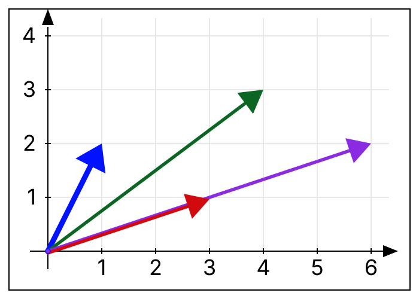

Lesson 2.5 Dependency
A collection has “redundancy” if one of the vectors can be made from the others. Suppose I have on my cereal shelf two boxes of Sugar-Os and one box of Fiber Flakes. Even though I have three boxes, all I need to mix my breakfast is two of them - the second box of Sugar-Os does not enable me to make new mixtures - it is redundant.
Definition 2.5.1. Linear (In)Dependence.
If
\(S\subset \R^m\) is a (nonempty) finite subset of vectors such that one of its vectors can be written as a linear combination of its other vectors, then the subset
\(S\) is
linearly dependent. In symbols,
\(S=\{\vect{v}_1,\vect{v}_2, \ldots, \vect{v}_n\}\) is dependent if there exists an
\(i\in \{1, \ldots , n\}\) and, for each
\(j\in \{1,\ldots,n\} - \{i\}\text{,}\) a number
\(x_j\in \R\text{,}\) such that
\begin{equation}
\vect{v}_i=x_1\vect{v}_1+x_2\vect{v}_2+\cdots +x_{i-1}\vect{v}_{i-1}+x_{i+1}\vect{v}_{i+1}+\cdots +x_n\vect{v}_n.\tag{2.5.1}
\end{equation}
This is a
dependency equation for
\(S\text{.}\) If no such equation exist, then
\(S\) is
linearly independent.
Throughout this text, I may sometime refer to collections of vectors as being “dependent” or “independent”, by which I will always mean linearly dependent and linearly independent, respectively.
Observe that the compact notation of span allows use to rewrite
Definition 2.5.1 succinctly: A collection
\(S\subset \R^m\) is
dependent if there exists a vector
\(\vect{v}\in S\) such that
\(\vect{v}\in \spn(S-\{\vect{v}\}).\)
Justify for yourself that if the zero vector lies in
\(S\text{,}\) then
Definition 2.5.1 implies that
\(S\) is dependent. For this reason, when we consider questions of dependence, we often begin by assuming our subset of vectors are all nonzero, which I may symbolize as
\(S\subset \R^m-\{\vect{0}\}\text{.}\)
If you are only considering two nonzero vectors
\(\vect{v},\vect{w}\in \R^m\text{,}\) then they are linearly dependent if and only if they are nonzero scalar multiples of each other, i.e.
\(\vect{v}=x\vect{w}\) for some nonzero
\(x\in \R\text{.}\)
If you have three or more vectors, dependency is more nuanced. For example, both collections
\begin{gather*}
\left \{ \textcolor{red}{\begin{bmatrix}3\\1\end{bmatrix}}, \textcolor{blue}{\begin{bmatrix}1\\2\end{bmatrix}}, \textcolor{purple}{\begin{bmatrix}6\\2\end{bmatrix}} \right\}\\
\left \{ \textcolor{red}{\begin{bmatrix}3\\ 1\end{bmatrix}}, \textcolor{blue}{\begin{bmatrix}1\\2\end{bmatrix}}, \textcolor{green}{\begin{bmatrix}4\\3\end{bmatrix}} \right\}
\end{gather*}
are dependent.

A line in
\(\R^2\text{.}\)
In the first collection, the third vector is a scalar multiple of the first vector, hence
\(\textcolor{purple}{\begin{bmatrix}6\\2\end{bmatrix}}=2\textcolor{red}{\begin{bmatrix}3\\1\end{bmatrix}}\text{.}\) In the second collection, no vector is a scalar multiple of the others, however, the third vector is a sum of the first two
\(\textcolor{g_green}{\begin{bmatrix}4\\3\end{bmatrix}}=1\textcolor{red}{\begin{bmatrix}3\\1\end{bmatrix}}+1\textcolor{blue}{\begin{bmatrix}1\\2\end{bmatrix}}\text{.}\)
Activity 2.5.2. Identifying and removing redundancy.
For each of the following sets of vectors, determine if it is dependent. If it is dependent, what can you throw away while preserving span?
-
\(\displaystyle S_1= \left\{ \begin{bmatrix} 1\\1\end{bmatrix}, \begin{bmatrix} -1\\1\end{bmatrix}\right\}\)
-
\(\displaystyle S_2= \left\{ \begin{bmatrix} 1\\1\end{bmatrix}, \begin{bmatrix} 2\\2\end{bmatrix}, \begin{bmatrix} 3\\3\end{bmatrix}\right\}\)
-
\(\displaystyle S_3=\left\{ \begin{bmatrix} 1\\0\end{bmatrix}, \begin{bmatrix} 0\\1\end{bmatrix}, \begin{bmatrix} 1\\1\end{bmatrix}\right\}.\)
Definition 2.5.4. \(k\)-Planes in \(\R^m\) and their Parametric Vector Form.
If \(\vect{p}\in\R^m\) and the \(k\)-vectors \(\vect{v}_1, \vect{v}_2, \ldots, \vect{v}_k\in\R^m\) are independent, then the set of points
\begin{equation*}
\rho=\left\{\vect{p}+t_1 \vect{v}_1+t_2 \vect{v}_2+\cdots +t_k \vect{v}_k \ | \ t_1,\ldots, t_k\in \R\right\},
\end{equation*}
is a \(k\)-plane, symbolized in parametric vector form. Here \(t_1, \ldots, t_k\) are parameters.
\(k\)-planes play an important and reoccurring role in linear algebra.
If
\(k=1\text{,}\) \(k\)-planes are lines. If
\(k=2\text{,}\) \(k\)-planes are planes. While it is difficult to geometrically visualize
\(k\)-planes for
\(k>2\text{,}\) it is still productive to keep the pictures of lines (e.g.
Example 2.3.4) and planes (e.g.
Example 2.3.16) in our minds as a metaphor for
\(k\)-planes.
We may use span to condense of the notation for
\(k\)-planes: if
\(S=\{\vect{v}_1, \vect{v}_2, \ldots, \vect{v}_k\}\text{,}\) then we may write
\(\rho = \vect{p}+\spn(S)\text{.}\) In this way, we may then think about
\(k\)-planes as spans which have been
translated by
\(\vect{p}\text{.}\)
We may now reason about independent vectors, but we will not have the computational tools to check if a collection of vectors is independent until Chapter XYZ. However, if a collection of vectors satisfies an easy verifiable condition I call separated, then we are guaranteed that they are independent.
Activity 2.5.6. Determining Independence.
Come up with an explanation as why each set below is independent:
\begin{equation*}
S_4=\left\{ \begin{bmatrix}1\\0\end{bmatrix}, \begin{bmatrix}0\\ 1\end{bmatrix} \right \}, \hspace{2pc}
S_5=\left\{ \begin{bmatrix}2\\1\\0\end{bmatrix}, \begin{bmatrix}5\\0\\ 1\end{bmatrix} \right \}, \hspace{2pc}
S_6=\left\{ \begin{bmatrix}3\\1\\0\\0\end{bmatrix}, \begin{bmatrix}-1\\0\\ 1\\0\end{bmatrix}, \begin{bmatrix}4\\0\\ 0\\1\end{bmatrix} \right \}.
\end{equation*}
Can you summarize your argument with a single observation?
The property that the above collections share is formalized in the following definition.
Definition 2.5.7. Separated.
If
\(S = \{\vect{v}_1, \ldots, \vect{v}_k\}\subset \R^m\) is a collection of vectors with the property that for each vector
\(\vect{v}_j\in S\text{,}\) there exists an index
\(i_j\in \{1,\ldots, m\}\) such that the
\(i_j^{th}\)-entry of
\(\vect{v}_j\) is nonzero, and the
\(i_j^{th}\) entry of each of the other vectors in
\(S\) is 0, then
\(S\) is
separated.
Proposition 2.5.8. Separated implies independent.
If
\(S\) is separated, then
\(S\) is independent.
Proof.
Even though being separated may seem very restrictive, certain vectors we will obtain in Chapter XYZ by
interpreting the reduced row echelon form of a matrix will be separated, and hence we will be assured independence.
An algebraically useful reformulation of dependency is to conceptualize it in terms of making the zero vector. We can always make the zero mixture by using zero servings of each vector. Dependency can be understood as being able to make the zero mixture by using
some nonzero servings.
Proposition 2.5.9. Dependency as making the zero vector in nontrivial ways..
If
\(S=\{\vect{v}_1, \ldots, \vect{v}_n\}\subset \R^m\text{,}\) then
\(S\) is dependent if and only if there exists numbers
\(x_1,\ldots, x_n\in \R\text{,}\) at
least one of which is not zero, such that
\(x_1\vect{v}_1+\cdots+x_n\vect{v}_n=\vect{0}\text{.}\)
Proof.
This is an “if-and-only-if” proposition. This means that I am claiming that the two statements are equivalent. To justify this proposition, I need to carefully show how each statement implies the other.
To begin, suppose the collection is dependent. Then, by
Definition 2.5.1, there exists an
\(i\in \{1, \ldots , n\}\) and, for each
\(j\in \{1,\ldots,n\}-\{i\}\text{,}\) a number
\(x_j\in \R\text{,}\) such that
\begin{equation*}
\vect{v}_i=x_1\vect{v}_1+x_2\vect{v}_2+\cdots +x_{i-1}\vect{v}_{i-1}+x_{i+1}\vect{v}_{i+1}+\cdots +x_n\vect{v}_n.
\end{equation*}
By moving
\(\vect{v}_i\) to the other side of the equation, and setting
\(x_i=-1\text{,}\) then I have produced an equation
\begin{equation*}
x_1\vect{v}_1+\cdots+x_n\vect{v}_n=\vect{0}
\end{equation*}
where by construction, at least one of the scalars is nonzero. This completes this implication.
Now suppose that there exists scalars
\(x_1,\ldots, x_n\in \R\text{,}\) at least one of which is not zero, such that
\(x_1\vect{v}_1+\cdots+x_n\vect{v}_n=\vect{0}\text{.}\) Let
\(x_i\) denote the first nonzero scalar. Since
\(x_i\) is nonzero, so is
\(-x_i\text{.}\) Then I may move
\(x_i\vect{v}_i\) to the other side of the equation, and by dividing by
\(-x_i\text{,}\) have produced an
\(i\in \{1, \ldots , n\}\) and, for each
\(j\in \{1,\ldots,n\}-\{i\}\text{,}\) a number
\(\frac{x_j}{-x_i}\in \R\text{,}\) such that
\begin{equation*}
\vect{v}_i=\frac{x_1}{-x_i}\vect{v}_1+\frac{x_2}{-x_i}\vect{v}_2+\cdots +\frac{x_{i-1}}{-x_i}\vect{v}_{i-1}+\frac{x_{i+1}}{-x_i}\vect{v}_{i+1}+\cdots +\frac{x_n}{-x_i}\vect{v}_n.
\end{equation*}
This completes this implication.
As you can see from the proof of
Proposition 2.5.9, we can easily move between the scalars that allow us to write a dependency equation and the scalars that allow us to make zero. They contain the same information, but for algebraic reasons, we will often focus on the scalars that allow us to make zero. These scalars contain important information about our subset, and, as it is useful to name objects that we wish to reason about, we form and name the associated servings vector.
\begin{equation*}
\underbrace{\textcolor{blue}{x_1}\vect{v}_1+\cdots + \textcolor{blue}{x_n}\vect{v}_n}_{\textcolor{red}{\text{Zero Mixture}}} =\vect{0}
\hspace{2pc}
\Longleftrightarrow
\hspace{2pc}
\underbrace{\begin{bmatrix}\textcolor{blue}{x_1}\\ \vdots \\ \textcolor{blue}{x_n}\end{bmatrix}}_{\textcolor{blue}{\text{Null Vector}}}
\end{equation*}
Definition 2.5.10. Null Vectors.
If
\(S=\{\vect{v}_1, \ldots, \vect{v}_n\}\subset \R^m\) and
\(x_1,\ldots, x_n\in \R\) are such that
\(x_1\vect{v}_1+\cdots+x_n\vect{v}_n=\vect{0}\text{,}\) then the associated servings vector
\(\begin{bmatrix}x_1\\ \vdots\\ x_n\end{bmatrix}\) is a
null vector for
\(S\text{.}\)
If
\(S\) has
\(n\) vectors, then a null vector has list-length
\(n\text{,}\) or in symbols, if
\(\vect{n}\) is a null vector for
\(S\text{,}\) then
\(\vect{n}\in \R^n\text{.}\) Observe that a null vector is simply a solution vector for making zero (
Definition 2.4.12).
Example 2.5.11. Visualizing Null Vectors.
Here I investigate null vectors for
\(S= \{\vect{v}_1,\vect{v}_2,\vect{v}_3\} = \left\{ \begin{bmatrix}1\\-1\end{bmatrix}, \begin{bmatrix}2\\2\end{bmatrix}, \begin{bmatrix}-3\\1\end{bmatrix}\right\}.\)
I know from Euclidean geometry that if I uniformly scale the plane, then I create similar triangles. I wonder if this can help me find new null vectors?
Activity 2.5.12. Exploring Null Vectors.
In this activity, you will use GeoGebra ID:
nd6qasfy to visualize and investigate null vectors for subsets of three vectors in
\(\R^2\text{.}\) Begin with
\(S= \{\vect{v}_1,\vect{v}_2,\vect{v}_3\} = \left\{ \begin{bmatrix}5\\1\end{bmatrix}, \begin{bmatrix}1\\3\end{bmatrix}, \begin{bmatrix}-2\\1\end{bmatrix}\right\}\text{.}\)
-
Explore. Following the strategy in
Example 2.5.11, move the points
\(U_1\text{,}\) \(U_2\text{,}\) and
\(U_3\) to form a closed triangle. (Hint: I have chosen
\(S\) so that you can find at least one set of nonzero, integers null vectors.)
-
Symbolize. Write down the corresponding symbolic equation using a null vector you found and the columns of the vectors in
\(S\text{.}\) (Perform the associated computation to verify you have indeed found a null vector.)
-
Interpret. What do your findings say about the collection
\(S\) in terms of redundancy? Explain.
-
Explore. So far, you should have found one null vector with of nonzero integer entries. Can you find more? How? (Hint: Consider the question at the end of
Example 2.5.11.)
-
Repeated Reasoning. Repeat for the new set
\(S= \{\vect{v}_1,\vect{v}_2,\vect{v}_3\} = \left\{ \begin{bmatrix}2\\1\end{bmatrix}, \begin{bmatrix}1\\2\end{bmatrix}, \begin{bmatrix}-1\\4\end{bmatrix}\right\}\text{.}\)
-
Generalize. What happens when
\(S\) has 4 vectors? Using tip-to-tail visualization, what shape are we looking for to find a null vector? How about
\(n\) many vectors? Explain.
To summarize up to this point, a null vector is a servings vector for making zero. The zero servings vector is always a null vector. The existence of a nonzero null vector is logically equivalent to our vectors being dependent.
Now that we have internalized the notion of a single null vector, we may start to reason about the collection of all null vectors.
Definition 2.5.13. Null Space of \(S\).
If \(S=\{\vect{v}_1, \ldots, \vect{v}_n\}\subset \R^m\text{,}\) then the set of all null vectors of \(S\) is a subset of \(\R^n\) called the null space of \(S\text{.}\) In symbols, using set notation,
\begin{equation*}
\Null(S) = \Null(\vect{v}_1, \ldots, \vect{v}_n)
= \left\{\begin{bmatrix}x_1\\ \vdots \\ x_n \end{bmatrix} \in \R^n \ \bigg| \ x_1\vect{v}_1+\cdots+x_n\vect{v}_n=\vect{0}\right\}.$$
\end{equation*}
Observe that the null space is precisely the solution set for making zero, or in symbols,
\(\Null(S) = \Sol(S, \vect{0})\text{.}\)
Much like span, the compact symbolism of null space is very efficient, but it is easy to get lost in the symbolism. We must practice symbolizing our thoughts on terms of null space, and conversely, practice interpreting the symbolism of null space in context.
For example, we can compactly summarize our observations in
Example 2.5.11 with:
\begin{equation*}
\begin{bmatrix}2\\ \frac{1}{2}\\ 1\end{bmatrix}\in \Null \left( \begin{bmatrix}1\\-1\end{bmatrix}, \begin{bmatrix}2\\2\end{bmatrix}, \begin{bmatrix}-3\\1\end{bmatrix}\right).
\end{equation*}
Activity 2.5.14. Symbolizing with Null Space.
Symbolize each expression using null space and set notation.
-
\(3\vect{a}+2\vect{b}+\vect{c}=\vect{0}\text{.}\)
-
\(2\vect{v}-\vect{w}\) is a nonzero vector.
-
There is no nontrivial way to make the zero vector with vectors
\(\vect{p}\text{,}\) \(\vect{q}\text{,}\) and
\(\vect{r}\text{.}\)
Activity 2.5.15. Interpreting the Symbolism of Null Space.
Use complete sentences and the language of mixture to interpret the meaning of each algebraic expression.
-
\(\begin{bmatrix}1\\-1\\2\\-2 \end{bmatrix} \in \Null(\vect{a},\vect{b},\vect{c},\vect{d})\text{.}\)
-
\(\{\vect{0}\} \subsetneq \Null(\vect{p},\vect{q},\vect{r})\text{.}\)
-
\(\begin{bmatrix}-3\\2\\1 \end{bmatrix}\notin \Null(\vect{v},\vect{u},\vect{w})\text{.}\)
Make sure that you understand how each of the following statement are equivalent.
I encourage you to continue reasoning about (in)dependence in the language of redundancy and in the language of distinct directions. Be prepared to algebraically work with redundancy as making zero in nontrivial ways.
Much like the span of
\(S\text{,}\) \(\spn(S)\text{,}\) the null space of
\(S\) has useful algebraic properties (cf
Proposition 2.4.8).
Proposition 2.5.17. Algebraic Properties of Null Spaces.
If
\(S=\{\vect{v}_1,\ldots,\vect{v}_n\}\subset \R^m\text{,}\) and
-
(Non-empty.) if
\(\vect{0}\in \R^n\) denotes the zero vector, then
\(\vect{0}\in \Null(S)\text{;}\)
-
(Closed under addition.) if
\(\vect{x},\vect{y}\in \Null(S)\text{,}\) then
\(\vect{x}+\vect{y}\in \Null(S)\text{;}\)
-
(Closed under scaling.) if
\(\vect{x}\in \Null(S)\) and
\(k\in \R\text{,}\) then
\(k\vect{x}\in \Null(S)\text{.}\)
Proof.
The logical steps here are similar to those in the proof of
Proposition 2.4.8. We must provide formal justification for each of the three properties.
1. The non-empty property is verified with a direct computation: the zero servings vector will always give a zero mixture
\begin{equation*}
\underbrace{\begin{bmatrix}\textcolor{blue}{0}\\ \vdots \\ \textcolor{blue}{0}\end{bmatrix}}_{\textcolor{blue}{\text{\textbf{Zero Servings Vector}}}}
\hspace{1pc}
\Longrightarrow
\hspace{4pc}
\underbrace{\textcolor{blue}{0}\vect{v}_1+\cdots + \textcolor{blue}{0}\vect{v}_n}_{\textcolor{red}{\text{\textbf{Zero Mixture Vector}}}}=\vect{0}.
\end{equation*}
2. Suppose that
\(\vect{x},\vect{y}\in \Null(S)\text{.}\) Unpacking names and using the definition of vector addition (
Definition 2.1.12)
\(\vect{x}+\vect{y}=\begin{bmatrix}x_1+y_1\\ \vdots \\ x_n+y_n\end{bmatrix}\text{.}\) Observe,
\begin{align*}
(x_1+y_1)\vect{v}_1 + \cdots + (x_n+y_n)\vect{v}_n \amp = (x_1\vect{v}_1 + \cdots + x_n\vect{v}_n) + (y_1\vect{v}_1 + \cdots + y_n\vect{v}_n) \amp \text{Proposition \ref{prop:scalar_sum_across_comb}}\\
\amp = \vect{0}+ \vect{0} \amp \text{$\vect{x}$, $\vect{y}$ are null vectors}\\
\amp = \vect{0} \amp \text{Additive identity (LC2)}
\end{align*}
Hence
\(\vect{x}+\vect{y}\) is also a null vector.
3. I leave this last formal justification to you in your homework in Problem XYZ.
We will continue to work with null spaces throughout this course, and will develop the computational tools to find, describe, and analyze null spaces in
Lesson 5.1.